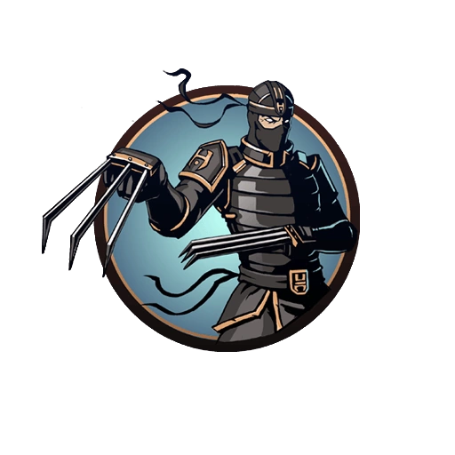

Shadow Fight 2
Рысь — один из шести демонов, хранящий печать от Врат Теней, и первым босс в Shadow Fight 2. Появился вместе в релизом игры — 11 сентября 2013 года. Имеет пять телохранителей, которых необходимо победить перед тем, как игрок сможет сразиться с ним. Рысь является основателем и лидером организации ассасинов, известной как «Орден», в состав которой входят его телохранители. Единственный противник, имеющий зачарование «Часовая бомба» на оружии.
